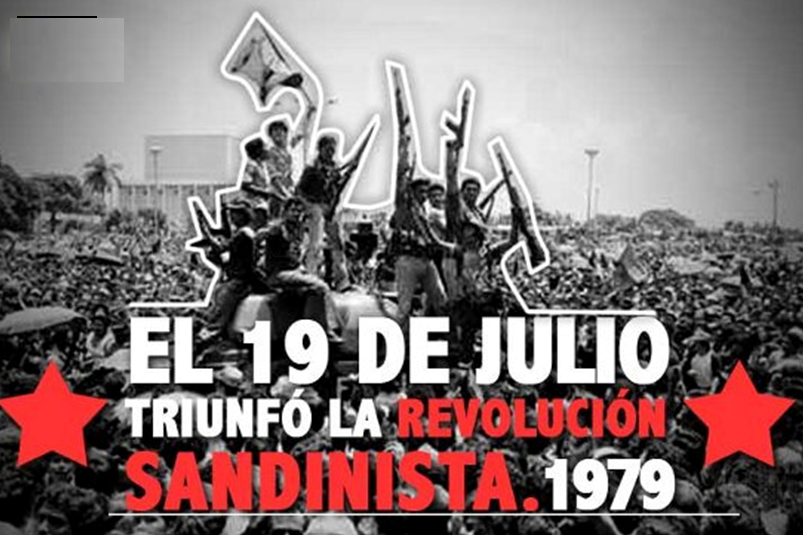
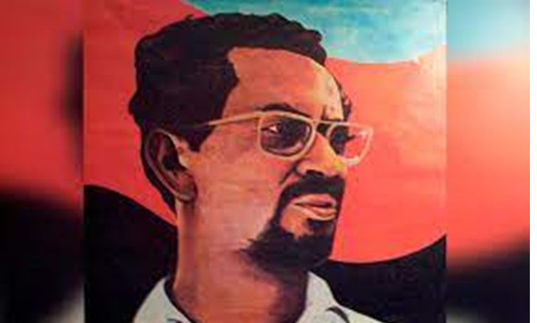
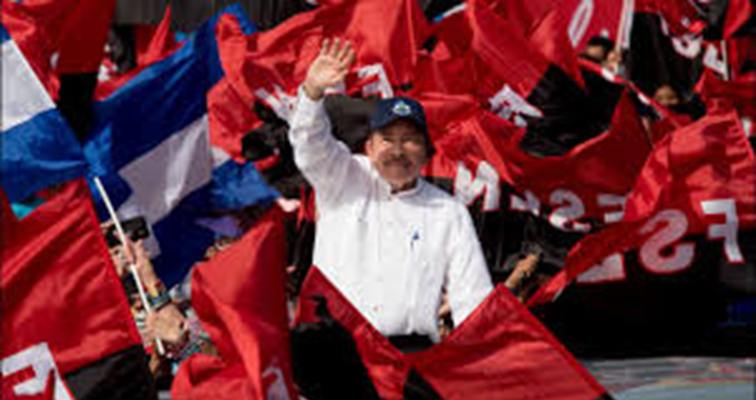
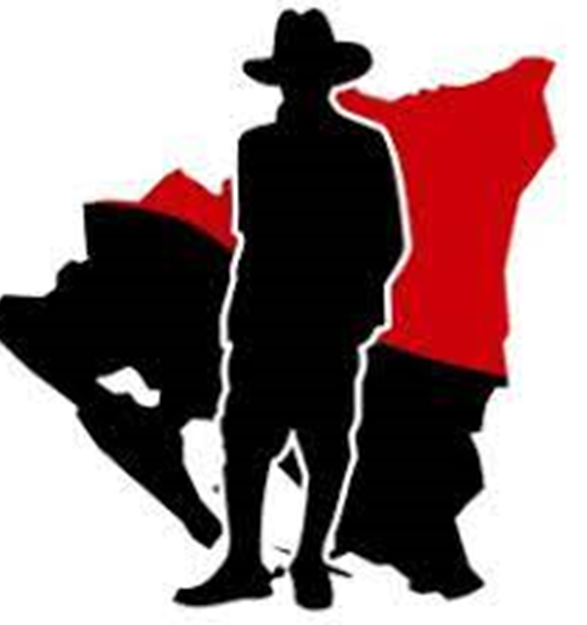

REVOLUCIÓN POPULAR SANDINISTA
El Frente de Liberación Nacional, FSLN. Que toma el nombre de la organización independentista argelina: Frente de Liberación Nacional de Argelia, que lideraba la lucha por la independencia de Argelia de Francia. La formación no surge mediante un congreso o una asamblea cuya preparación hubiera requerido un proceso teórico previo, sino de la propia acción. El propio Carlos Fonseca lo exponía de la siguiente forma: El Frente no nació de una asamblea o de un congreso, ni lanzó una proclama anunciando su creación. Ni tampoco presentó un programa. En el Frente primero fue la acción y sobre la base de sus primeras experiencias fue formulando y reformulando, porque siempre ha tenido un gran sentido autocrítico, su programa, su estrategia y su táctica. El FSLN es un producto genuino de la historia popular de Nicaragua.
El FSLN lideró la lucha armada contra la dictadura de la familia Somoza en Nicaragua a partir de su fundación, pasando por varios períodos; desde muchas acciones armadas y políticas, hasta su casi desaparición a principios de los años 1970. En 1974 inicia un proceso creciente de actividades armadas que tienen su punto máximo hacia mediados de 1978 y llevan al triunfo de la revolución en 1979. Esta lucha se denomina Revolución Nicaragüense o Revolución Popular Sandinista y permitió la entrada, y ascenso al poder, de los revolucionarios en Managua el 19 de julio de 1979; y el derrocamiento de la dictadura de Anastasio Somoza Debayle, hijo de Anastasio Somoza García quien es el origen de lo que se denominó la "Dinastía Somoza", en el poder en Nicaragua desde el asesinato de Augusto C. Sandino en 1934.
La Revolución Popular Sandinista o Revolución nicaragüense fue un proceso político iniciado en Nicaragua en julio de 1979 por el Frente Sandinista de Liberación Nacional (FSLN) (nombrado así en memoria de Augusto César Sandino) puso fin a la dictadura de la familia Somoza y se prolongó hasta febrero de 1990, cuando el FSLN perdió las elecciones de febrero de 1990 frente a la Unión Nacional Opositora después de una grave situación económica y social en el país. El 19 de julio de 1979 Nicaragua alzo su voz y puso pare a la tiranía de la familia Somoza, así como su dictadura militar.
El Frente Sandinista de Liberación Nacional (FSLN) fue la organización encargada a enfrentarse a los Somoza y ponerle fin a su gobierno, consiguiendo la destitución de Anastasio Somoza Debayle. La lucha se había iniciado durante el siglo XX intensificándose en 1978, al siguiente año (1979) fue firmado un acuerdo de unidad por los representantes de FSLN. El 19 de julio de 1979 la FSLN entró en Managua junto con varios habitantes nicaragüense, obteniendo la derrota de Anastasio Somoza Debayle.
Por esta razón cada 19 de julio en Nicaragua celebran lo que ha sido considerado como una de las gestas heroicas más grandes. En este día se realizan actos conmemorativos en la capital, como un discurso del presidente donde asisten la sociedad en general y algunos personajes políticos.



